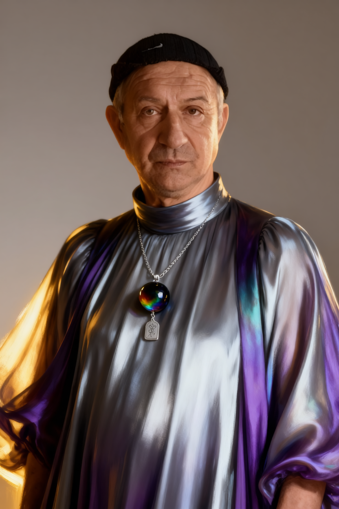
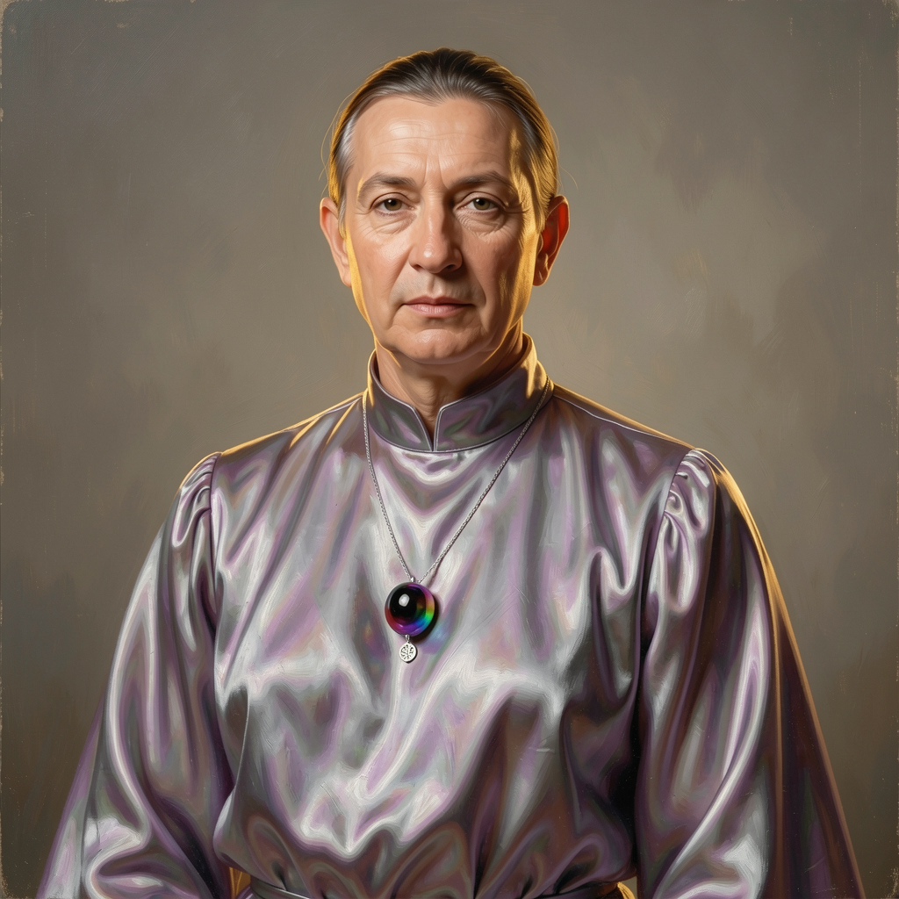

Prompt
参考图中的人物呈现半身肖像，表情宁静且端庄。图像采用超写实构图，并带有淡淡的油画质感。主体穿着一件飘逸空灵的虹彩丝绸长裙，颜色在深银色与紫色之间变换，配有高领和宽松的泡泡袖；颈间戴着一条精致的银链，挂着一颗抛光的彩虹黑曜石珠吊坠，以及一个小巧的刻字吊坠。场景设定在中性的氛围感工作室背景中。柔和的电影级工作室灯光伴随温暖的金边光，营造出一种光晕，凸显了宝石的光泽与金属质感。高分辨率，细节清晰，景深效果，优雅构图，8k。


